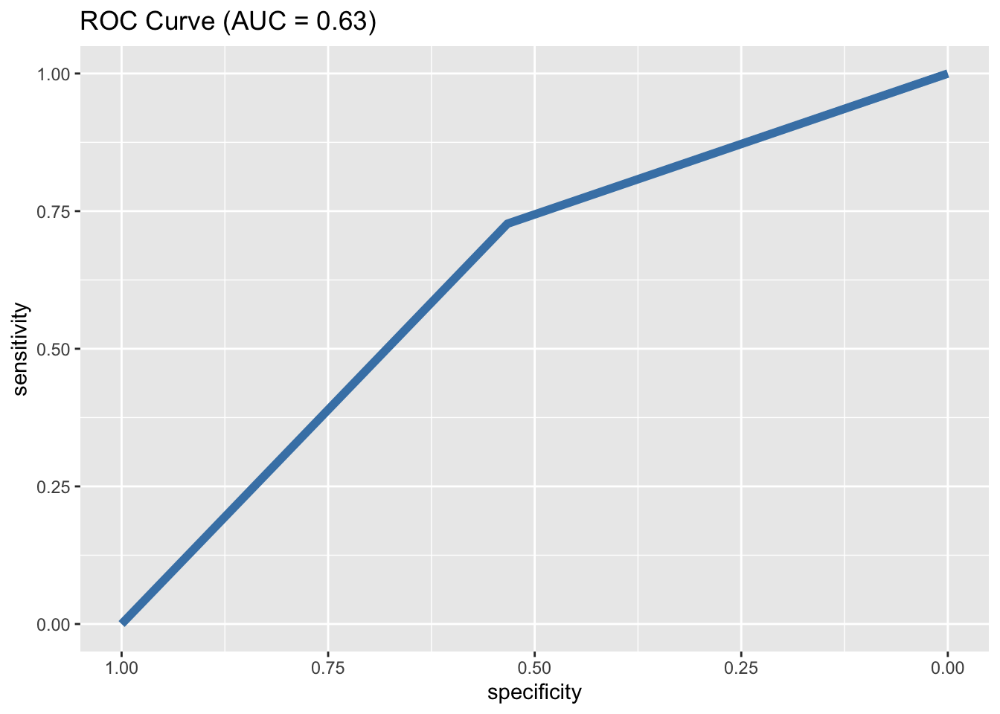

Chapter 7 Pythagorean Record
Baseball statistican (sabermetrican) Bill James proposed Pythagorean expectation to estimate the percentage (or number) of games that a team is expected to win based on the number of runs they score and the number of runs they allow.
Definition 7.1 The (basic) Pythagorean expectation for a team’s win percentage and win total are given by the following:
\[\text{Pythagorean Win Pct} = PythWin\% = 100 * \frac{RS^2}{RS^2 + RA^2}\]
\[\text{Pythagorean Win Total} = PythWin = N \cdot \frac{RS^2}{RS^2 + RA^2}\]
where for a given team, \(N\) is the number of games, \(RS\) is the number of runs scored, and \(RA\) is the number of runs allowed.
Note that \(RS\) and \(RA\) can be based on season totals or per game averages.
Example 7.1 In 2022, the Colorado Rockies baseball team scored an average of 4.3 runs per game and allowed an average of 5.4 runs per game. The Rockies’ record in 2022 was 69-94 (0.420 win pct). Calculate the Pythagorean win percentage and win total. Did the Rockies underperform or overperform based on these results?
\(PythWin\% = 100 * \frac{RS^2}{RS^2+RA^2} = \frac{4.3^2}{4.3^2+5.4^2} = 38.8\%\)
\(PythWin\% = N \cdot \frac{RS^2}{RS^2+RA^2} = 162 * \frac{4.3^2}{4.3^2+5.4^2} = 63\)
( pythwinpct = 100*(4.3^2)/(4.3^2+5.4^2) )## [1] 38.80378( pythwins = 162*(4.3^2)/(4.3^2+5.4^2) )## [1] 62.86212It turns out that we can find a more optimal estimate of Pythagorean wins by using an exponent different from 2.
For example, Baseball Reference (https://www.sports-reference.com/blog/baseball-reference-faqs/) uses an exponent of 1.83.
Definition 7.2 The (general) Pythagorean expectation for a team’s win percentage and win total are given by the following:
\[\text{Pythagorean Win Pct} = PythWin\% = 100 * \frac{RS^n}{RS^2 + RA^n}\]
\[\text{Pythagorean Win Total} = PythWin = N \cdot \frac{RS^n}{RS^n + RA^n}\]
where for a given team, \(N\) is the number of games, \(RS\) is the number of runs scored, and \(RA\) is the number of runs allowed. \(n\) is optimized for predictive accuracy over a large dataset.
It will be helpful to have a function to find the optimal Pythagorean exponent. Such a function called pyth_opt is given below that minimizes mean squared error. Use plot_flag=1 to generate a plot.
pyth_opt = function(RS,RA,WinPct,digits,plot_flag){
exps = seq(0,15,by=10^(-digits))
n_exps = length(exps)
MSE = rep(NA,n_exps)
for(i in 1:n_exps){
temp_exp = exps[i]
PyWinPct = RS^temp_exp/(RS^temp_exp + RA^temp_exp)
MSE[i] = mean((PyWinPct-WinPct)^2)
}
min_idx = which(MSE==min(MSE))
pyth_opt = exps[min_idx]
if(plot_flag){
df = data.frame(Exponent=exps,MSE=MSE)
df %>% ggplot(aes(x=Exponent,y=MSE)) +
geom_line() +
geom_point(data=df[min_idx,],color="blue") +
geom_label(data = df[min_idx,],
aes(x = Exponent, y = MSE, label = Exponent),vjust=-0.5)
} else {
return(pyth_opt)
}
}Example 7.2 Final season MLB standings and related statistics are given in mlb_2022.csv. Find the optimal value of \(n\) that minimizes mean squared error between actual wins and Pythagorean wins.
mlb_2022 = read_csv("data/mlb_2022.csv")
mlb_2022 %>% slice(1:10) %>% kable(booktabs=T,digits = 4)| Team | W | L | W-L% | R | RA | Rdiff | pythWL |
|---|---|---|---|---|---|---|---|
| Los Angeles Dodgers | 111 | 51 | 0.685 | 5.2 | 3.2 | 2.1 | 116-46 |
| Houston Astros | 106 | 56 | 0.654 | 4.5 | 3.2 | 1.4 | 106-56 |
| Atlanta Braves | 101 | 61 | 0.623 | 4.9 | 3.8 | 1.1 | 100-62 |
| New York Mets | 101 | 61 | 0.623 | 4.8 | 3.7 | 1.0 | 99-63 |
| New York Yankees | 99 | 63 | 0.611 | 5.0 | 3.5 | 1.5 | 106-56 |
| St. Louis Cardinals | 93 | 69 | 0.574 | 4.8 | 3.9 | 0.8 | 95-67 |
| Cleveland Guardians | 92 | 70 | 0.568 | 4.3 | 3.9 | 0.4 | 88-74 |
| Toronto Blue Jays | 92 | 70 | 0.568 | 4.8 | 4.2 | 0.6 | 91-71 |
| Seattle Mariners | 90 | 72 | 0.556 | 4.3 | 3.8 | 0.4 | 89-73 |
| San Diego Padres | 89 | 73 | 0.549 | 4.4 | 4.1 | 0.3 | 86-76 |
pyth_opt(mlb_2022$R,mlb_2022$RA,mlb_2022$`W-L%`,2,1)
Example 7.3 For a more accurate estimate of the optimal Pythagorean exponent, use all MLB final standings data from 2000–2017. This is contained in mlb_standings_long.csv.
mlb_long = read_csv("data/mlb_standings_long.csv")
mlb_long %>% slice_head(n = 3) %>% kable(booktabs=T,digits = 4)| yearID | lgID | teamID | G | W | L | R | RA | RD | Wpct |
|---|---|---|---|---|---|---|---|---|---|
| 2000 | AL | ANA | 162 | 82 | 80 | 864 | 869 | -5 | 0.5062 |
| 2000 | NL | ARI | 162 | 85 | 77 | 792 | 754 | 38 | 0.5247 |
| 2000 | NL | ATL | 162 | 95 | 67 | 810 | 714 | 96 | 0.5864 |
mlb_long %>% slice_tail(n = 3) %>% kable(booktabs=T,digits = 4)| yearID | lgID | teamID | G | W | L | R | RA | RD | Wpct |
|---|---|---|---|---|---|---|---|---|---|
| 2017 | AL | TEX | 162 | 78 | 84 | 799 | 816 | -17 | 0.4815 |
| 2017 | AL | TOR | 162 | 76 | 86 | 693 | 784 | -91 | 0.4691 |
| 2017 | NL | WAS | 162 | 97 | 65 | 819 | 672 | 147 | 0.5988 |
pyth_opt(mlb_long$R,mlb_long$RA,mlb_long$Wpct,2,1)
As previously mentioned, sabermetricans tend to use PyExp = 1.83 for MLB.
Example 7.4 Create a scatterplot to compare Team Wins and Team Pythagorean Wins in 2022 and calculate the correlation.
mlb_2022 = mlb_2022 %>% mutate(PyWins=162*R^1.83/(R^1.83+RA^1.83))
mlb_2022 %>% ggplot(aes(x=W,y=PyWins)) + geom_point() + labs(x="Wins") +
geom_abline(intercept=0, slope=1, color="blue", linetype="dashed")
cor(mlb_2022$W,mlb_2022$PyWins)## [1] 0.9764977Example 7.5 The Rockies scored 4.31 runs per game and allowed 5.4 runs per game in 2022. Did the Rockies underperform or overperform based on their Pythagorean record?
mlb_2022 %>% filter(Team=="Colorado Rockies") %>%
mutate(PyWins = 162*4.31^1.83/(4.31^1.83+5.39^1.83)) %>%
kable(booktabs=T,digits = 4)| Team | W | L | W-L% | R | RA | Rdiff | pythWL | PyWins |
|---|---|---|---|---|---|---|---|---|
| Colorado Rockies | 68 | 94 | 0.42 | 4.3 | 5.4 | -1.1 | 65-97 | 64.6548 |
The Rockies won 68 games and were expected to win 65 games based on their Pythagorean record. The Rockies outperformed their Pythagorean record.
Example 7.6 Calculate the Pythagorean exponent for NFL using 2022 season totals. This data is contained in nfl_2022.csv.
nfl_2022 = read_csv("data/nfl_2022.csv")
nfl_2022 %>%
slice_head(n=5) %>%
kable(booktabs=T,digits = 4)| Team | W | L | T | W-L% | PF | PA |
|---|---|---|---|---|---|---|
| Buffalo Bills* | 13 | 3 | 0 | 0.813 | 455 | 286 |
| Miami Dolphins+ | 9 | 8 | 0 | 0.529 | 397 | 399 |
| New England Patriots | 8 | 9 | 0 | 0.471 | 364 | 347 |
| New York Jets | 7 | 10 | 0 | 0.412 | 296 | 316 |
| Cincinnati Bengals* | 12 | 4 | 0 | 0.750 | 418 | 322 |
pyth_opt(nfl_2022$PF,nfl_2022$PA,nfl_2022$`W-L%`,2,1)
For 2022, there is an optimal Pythagorean exponent of 3.38. Using a larger dataset of more seasons will give a better estimate.
Football Outsiders (https://www.footballoutsiders.com/stat-analysis/2017/presenting-adjusted-pythagorean-theorem) uses PyExp = 2.37 for NFL.
Similar analyses can be done for other sports as well. PyExp = 13.91 is often used for NBA and PyExp = 2.15 for NHL.